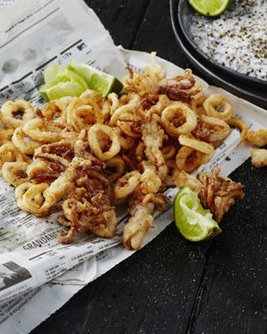

Gefrituurde inktvis
_______________________________________________________
Inktvis is goed te krijgen op de markt en kost niet veel. Ook is het lekker!
Ingrediënten
- 500 g inktvis
- 75 bloem
- ½ theelepel bakpoeder
- zout
- 1 dl water
- frituurvet
Bereidingswijze
- Snij ca.500 g inktvis in ringen, ook de tentakels
- Maak een deegje van 75 g, ? theel, bakpoeder, iets zout en ca. 1 dl water
- Haal de ringen erdoor en bak in frituurvet van 175?
- Laat uitlekken op keukenpapier 
Tip Lekker met stokbrood of sla!